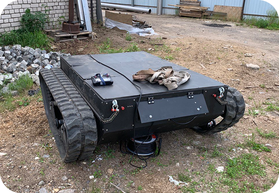
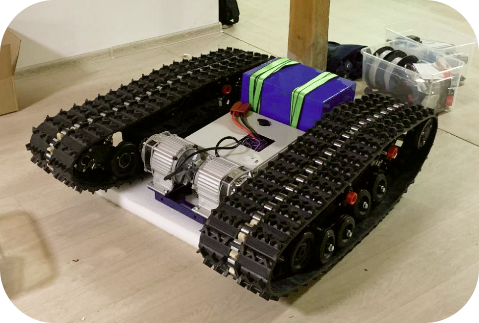
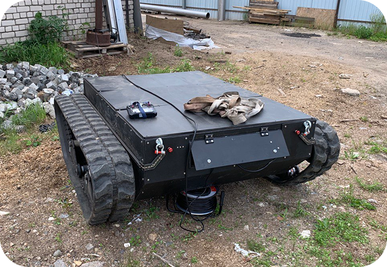
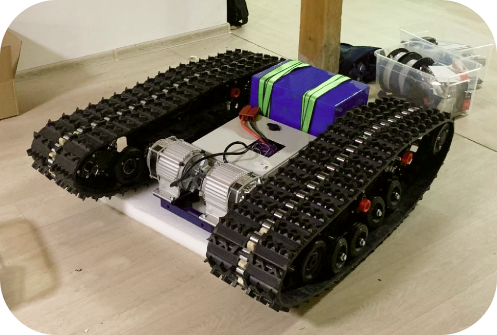

NONPLANAR-1
To push
printing
further.
First industry-ready 5 axis nonplanary 3D printer.
CHANGE THE WAY
YOU CREATE
Make industrial-grade prints stronger, faster and more
efficient in the comparison with classical 3-axis FDM machines.
Able to print refractory polymers (PEEK, ULTEM).
BUILT FOR
MORE
Workspace: ⌀300x700 mm
in multi-axis mode
For your big concepts.
ROBUSTNESS
MATTERS
Custom 5-axis
kinematic scheme
along with precision
linear and rotational
drives.
NO COMPROMISES
• Nozzle temperature - up to 500°
• Buildplate temperature - up to 150°
• Active chamber temperature - up to
150°
• Water component cooling,
compressed air printed model cooling.
• Full-auto buildplate leveling and
temperture expansion compensation.
• Active ringing compensation.
• Active heated material box.


 


